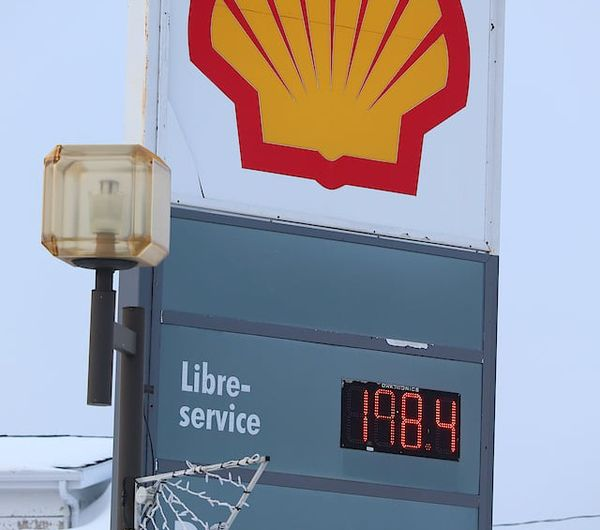

Nous voilà rendus dans un film d’horreur. On a déjà parlé des véhicules électriques, et on peut raisonnablement dire que, au vu de la flambée du prix de l’essence, ce sont les propriétaires de ces véhicules qui se marrent.
Certes, il y a des nouvelles intéressantes au niveau du prix du brut qui semble retomber, à défaut de revenir au prix précédent, ce qui peut indiquer que cette flambée pourrait n’être qu’un événement temporaire, quoique traumatisant en quelque sorte. M’enfin !
Le printemps se rapproche à grands pas. La preuve : les température deviennent plutôt clémentes. Pas encore au-dessus du point de congélation mais pas loin. Avec le port du masque qui devrait s’éclipser dans les jours qui viennent (notre cher gouvernement n’écarte pas l’idée d’avancer la date du retour à visage découvert pour la fin mars au lieu de la mi-avril), ça nous fait un bien immense pour le moral, et Dieu sait qu’on en a besoin. Parce qu’avec la pandémie, l’hiver, la guerre en Ukraine et j’en passe, on a comme une forte envie de se faire remonter le moral.